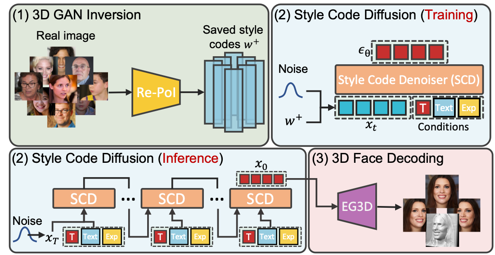

Abstract
Generating photorealistic 3D faces from given conditions is a challenging task. Existing methods often rely on time-consuming one-by-one optimization approaches, which are not efficient for modeling the same distribution content, e.g., faces. Additionally, an ideal controllable 3D face generation model should consider both facial attributes and expressions. Thus we propose a novel approach called TEx-Face(TExt & Expression-to-Face) that addresses these challenges by dividing the task into three components, i.e., 3D GAN Inversion, Conditional Style Code Diffusion, and 3D Face Decoding. For 3D GAN inversion, we introduce two methods which aim to enhance the representation of style codes and alleviate 3D inconsistencies. Furthermore, we design a style code denoiser to incorporate multiple conditions into the style code and propose a data augmentation strategy to address the issue of insufficient paired visual-language data. Extensive experiments conducted on FFHQ, CelebA-HQ, and CelebA-Dialog demonstrate the promising performance of our TEx-Face in achieving the efficient and controllable generation of photorealistic 3D faces.
Method Overview
We train a 3D GAN inversion model called Re-PoI and save the style codes it infers. These saved codes are then used to train a style code denoiser with three conditions, i.e., time steps, text prompts, and expression codes. When inference, we decode the generated style codes into 3D faces using EG3D. Please refer to our paper for more details.
Visualization
BibTeX
@misc{shen2023controllable,
title={Controllable 3D Face Generation with Conditional Style Code Diffusion},
author={Xiaolong Shen and Jianxin Ma and Chang Zhou and Zongxin Yang},
year={2023},
eprint={2312.13941},
archivePrefix={arXiv},
primaryClass={cs.CV}
}